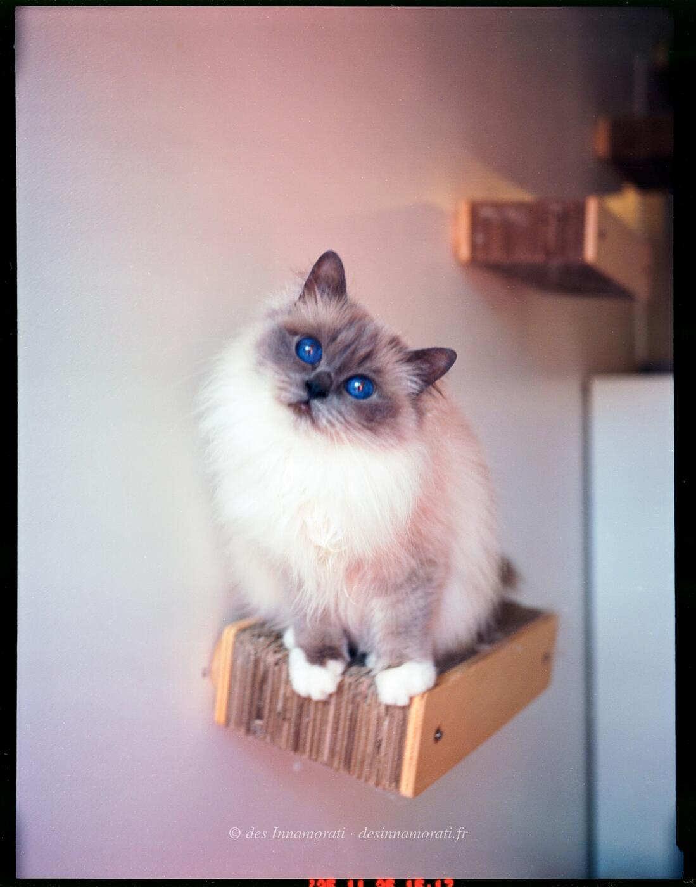

RobeFemelle · Blue point
Naissance21 avril 2021
TitresIC · DVM
StatutChampionne Internationale FIFe
Album5 photos, de mai 2021 à décembre 2025
Frères et sœursSakura des Innamorati, Sanji des Innamorati
Demi-frères et sœurspar sa mère : 2020 avec Origan de Shweli-Sittang, 2022 avec Rush Boom Bang du Relais Napoléon
par son père : 2020 avec Padmée des Monts de Bohème, 2020 avec Quintessence
par son père : 2020 avec Padmée des Monts de Bohème, 2020 avec Quintessence


Palmarès
12 expositions · 22 jugements · 1 Best in Show2026
- Mediterranean Winner Show BordeauxCAGCIB · BIV
2025
- Le Taillan BordeauxCAGCIB · BIV
2024
- Le Taillan BordeauxCAGCIB
- Le Taillan BordeauxCAGCIB
2023
- Saint JamesCAGCIB
- Saint JamesCACIB
- Le Taillan MédocCACIB
- Le Taillan MédocCACIB · BIV
2022
- Braud et Saint LouisCACIB
- Braud et Saint LouisCACIB
- ParisCAC · BIV · NOM
- ParisCAC
- ParisCAC · NOM
- PontorsonEXC1 · BIV · NOM
- PontorsonEXC1 · BIV · NOM · BIS
2021
- PontchâteauEXC1 · BIV · NOM
- PontchâteauEXC1 · BIV · NOM
- St Seurin sur l'IsleEXC1
- Braud et Saint LouisEXC1 · BIV
- Braud et Saint LouisEXC1
- ParisEXC2
- ParisEXC1 BIV
EXC Excellent (classement) · CAC, CACIB, CAGCIB, CACS certificats de champion, champion international, grand champion international et suprême · CAP, CAPIB, CAGPIB, CAPS équivalents pour les chats stérilisés · BIV meilleur de la variété · NOM nommé pour le Best in Show · BIS Best in Show · BOB Best of Best, le meilleur de toute l’exposition
Photos réduites et marquées. Elles appartiennent à la Chatterie des Innamorati et ne peuvent pas être reprises dans une annonce.